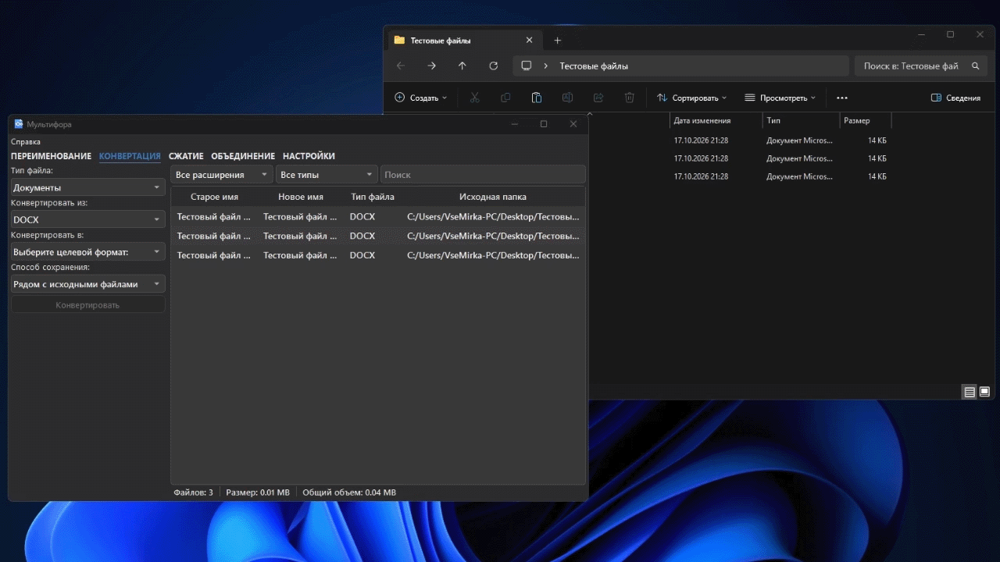

Конвертация и форматы
Конвертация выполняется нативными движками PdfCraft, PhotoCraft и DeckCraft. Сначала добавьте поддерживаемые файлы, затем на вкладке КОНВЕРТАЦИЯ выберите тип, исходный и целевой формат. Список назначения зависит от исходного формата.

Порядок действий
- Добавьте в очередь файлы одного типа или отметьте нужные файлы галочками в колонке «В работу». Без отметок обрабатываются все подходящие файлы текущего списка.
- Выберите тип файла.
- Выберите формат «Конвертировать из».
- Выберите формат «Конвертировать в».
- Задайте способ сохранения и при необходимости папку результата.
- Нажмите «Конвертировать».
Куда сохраняются результаты
Колонка «Тип: сейчас → после» показывает исходный и выбранный целевой формат, например DOCX → PDF. Если файл не участвует в преобразовании или целевой формат ещё не выбран, после стрелки отображается прочерк.
| Режим | Результат |
|---|---|
| Спрашивать каждый раз | Папка выбирается перед обработкой. |
| Рядом с исходными файлами | Результат лежит возле каждого источника. |
| В папку «Конвертированные» | Создаётся подпапка рядом с источником. |
| В отдельную папку | Все результаты сохраняются в выбранное место. |
Поддерживаемые категории
| Тип | Примеры исходных форматов | Примеры целевых форматов |
|---|---|---|
| Документы | PDF, TXT, PPTX, DeckCraft (.deckcraft); изображения: PNG, JPEG, TIFF, WebP, GIF, BMP, PSD/PSB, ORA, SVG, HEIC, XCF, KRA, PDN, Affinity; для PdfCraft также JP2, J2K, JPX, PCX | PDF, DOCX, PPTX/POTX/PPSX, DeckCraft, TXT, HTML, RTF, MD; изображения: PNG, JPG/JPEG, TIFF, WebP, GIF, BMP, TGA, ICO, QOI, PNM, OpenEXR, HDR, FITS, PSD/PSB, ORA, .pcraft |
| Изображения | JPG, PNG, WEBP, BMP, TIFF, GIF, ICO, TGA, QOI, PNM, EXR, HDR, FITS, PSD/PSB, ORA, SVG, HEIC, XCF, KRA, PDN, Affinity; JP2/J2K/JPX/PCX | PNG, JPG/JPEG, TIFF, WebP, GIF, BMP, TGA, ICO, QOI, PNM, EXR, HDR, FITS, PSD/PSB, ORA, .pcraft, PDF |
Список в программе показывает только совместимые варианты для выбранного исходного формата. Конвертация в тот же формат не предлагается. DOCX, HTML, RTF и Markdown доступны как выходные форматы PdfCraft; входные DOC/DOCX/ODT/EPUB/FB2/XPS/MOBI не поддерживаются и удалены из выбора.
Чтобы сохранить страницы PDF как изображения, выберите тип «Документы», исходный формат PDF и PNG, JPG/JPEG или TIFF. PdfCraft сохраняет каждую страницу отдельным файлом с номером страницы в имени.
PhotoCraft поддерживает часть форматов только для чтения: SVG, HEIC, Affinity, XCF, KRA и PDN. Они доступны как источники, но не предлагаются как выходные форматы. PDF из изображения создаётся через PdfCraft; PhotoCraft предварительно преобразует в PNG те форматы изображений, которые PdfCraft не открывает напрямую.
PDF → DOCX/PPTX выполняется PdfCraft. PDF → PPTX создаёт по одному слайду на страницу PDF; точное воспроизведение сложных шрифтов, таблиц и векторной графики не гарантируется. DeckCraft и PhotoCraft upstream находятся в активной разработке; проверяйте результат на копиях файлов.
См. также: полное руководство и устранение неполадок.